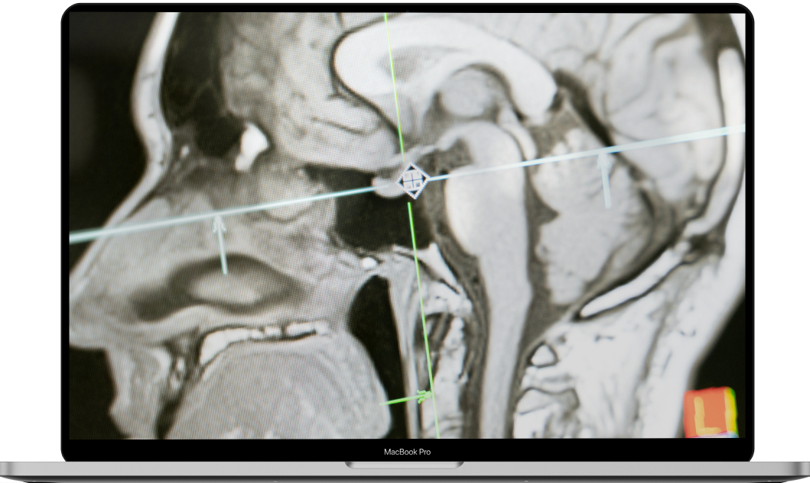

Afueni
The Easiest way to detect cancer in your browser
Using our AI powered techniques and computer vision algorithms, you can easily and quickly detect cancerous cells with high accuracy.

Using our AI powered techniques and computer vision algorithms, you can easily and quickly detect cancerous cells with high accuracy.
Our carefully crafted AI mechanisms ensure unparalleled accuracy in detecting cancerous cells, providing you with reliable results every time.
